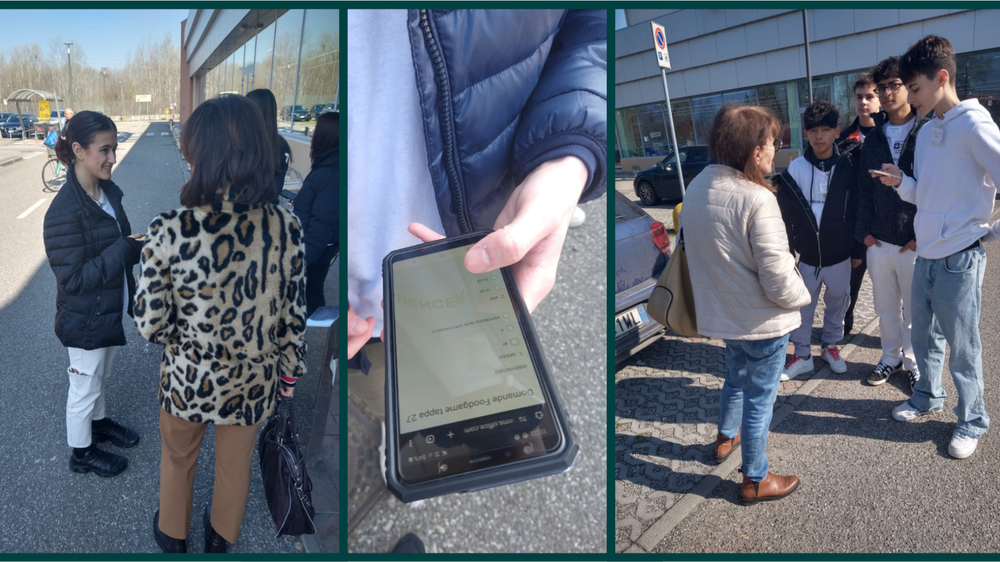

Tappa 27: Intervista al Supermercato üé§
Per capire meglio le abitudini delle persone, siamo andati davanti al supermercato Famila di Casalpusterlengo. Abbiamo fermato i clienti e abbiamo fatto loro alcune domande sul loro stile di vita, su cosa mangiano e su quanto sono attenti alla sostenibilità. Per ulteriori informazioni consultate il nostro articolo (se disponibile).
 ← Torna alla Timeline